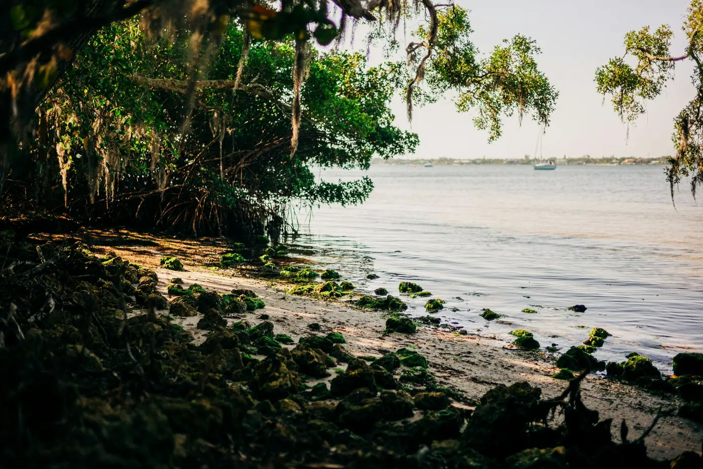

Mark was born in Fort Lauderdale in the 1950s, went to school in Tallahassee and built a career across the Southeast. He kept coming back for fishing, sailing and family.
Betsy grew up in upstate New York and started vacationing in southwest Florida in the 1970s. Her parents later moved full time to the Naples and Fort Myers area.
In 2005, after selling our business, we had two weeks to pick the right Florida town to retire and raise three young kids. Even after decades exploring the state, it took a fresh look.
We've lived in different parts of Florida and weathered our share of hurricanes. Today we live on a coastal dune lake on 30A, and we built Florida Coastal so you can make this choice with more than two weeks and a guess.
What twenty years here taught us
There's a lot more Florida than people think. Most folks only know Miami, Tampa and Naples. Drive the coast and you find fish house towns, towns with a real downtown, and islands with no high rises. You can find exactly what you're looking for if you know where to look.
Our family has been coming to 30A for more than twenty years. Life here is live music, good fishing about two miles offshore and enough friends. Most days there's a sunset and a view. Not a ton going on, but enough, and the kids always want to visit.
We've ridden out several hurricanes, Michael in 2018 among them. Usually that meant a week or more without power, closed streets and a few trees down. That's why every town on this site has a Heads up note. We'd rather you know going in.
Find the stretch of coast that fits your life.
Eight quick questions about your days, your pace and your budget. We score all 167 beach towns and show you the 5 that fit, with the honest tradeoffs for each.
Not ready to move yet? Most people aren't.
Get our free Move and Belong Guide now: how to go from new in town to knowing people in your first 90 days. Plus one short letter a month about the coast.
Unsubscribe anytime.